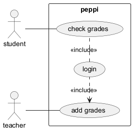

plantUML
Voit ladata sen sivulta https://plantuml.com/download.
Riittää siis, että lataat tuon jar-tiedoston, mutta sovelluksen ajamiseksi tarvitset Javan.
Minulla on esimerkiksi tiedosto myclass.puml ja voin generoida siitä png-kuvan komennolla
java -jar plantuml-1.2025.0.jar myclass.pum
Repossa on on koodit
- käyttöönottokaaviolle myBase.puml
- komponenttikaaviolle myComponent.puml
- käyttötapauskaaviolle myUseCase.puml
- Qt:n luokkakaaviolle myPeppiClass.puml
- REST API:n luokkakaaviolle myRestApiClass.puml
plantUML koodiopas
Opas löytyy sivulta https://plantuml.com/guide
Esimerkkikoodien kuvat
käyttöönottokaaviolle
komponenttikaaviolle

käyttötapauskaaviolle

Qt:n luokkakaaviolle
REST API:n luokkakaaviolle